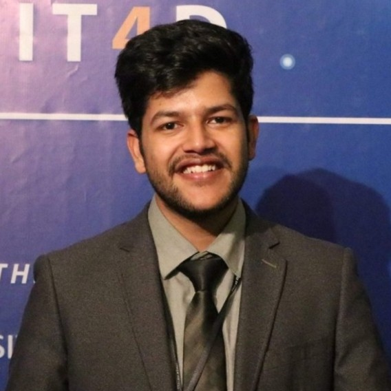

Production ML systems and the software around them — RAG pipelines, agentic LLM tools, geospatial platforms. Python-first. Currently building ML systems at Wake Forest University.
featured projects
GeoTALOS
Geospatial AI Platform
AOI-driven platform for discovering imagery, running detection/segmentation models, and automating monitoring workflows through an interactive map and visual pipeline builder. Owned the FastAPI + PostGIS/pgSTAC backend; cut peak segmentation memory 8x (66.5GB → 8.4GB) via tiled raster streaming.
GeoTALOS demo
AwakeForest (prototype)
KnowThyself
Agentic LLM Interpretability · AAAI 2026 Demo
LangGraph orchestrator-router agent that consolidates 5+ fragmented LLM interpretability tools into a single chat interface, routing natural-language queries to specialized analysis modules. Upload a model, interrogate its behavior conversationally.
KnowThyself demo
more projects
WakeWander
Personal · Agentic Planning
8-node LangGraph plan-and-execute travel planner: human-in-the-loop interrupts, budget tracking, SSE progress streaming.
Cloud Speech Memo Analyzer
Personal · Production-style Service
Voice memo analyzer on Azure AI: transcribe, analyze, TTS-summarize, fully instrumented with OpenTelemetry + App Insights.
Telephony RAG Assistant
Production · Nepal Telecom
National-scale RAG chatbot (hybrid retrieval) plus real-time ASR → LLM → TTS telephony pipeline on Kafka. Proposal secured £150K GSMA funding.
Low-Resource ASR & LLM Fine-tuning
Speech & NLP · COLING 2025
LoRA fine-tuning for Whisper (WER 22→12.8) and Wav2Vec2 + n-gram/Transformer LM fusion (WER 54→18.3).
experience
skills
publications
education